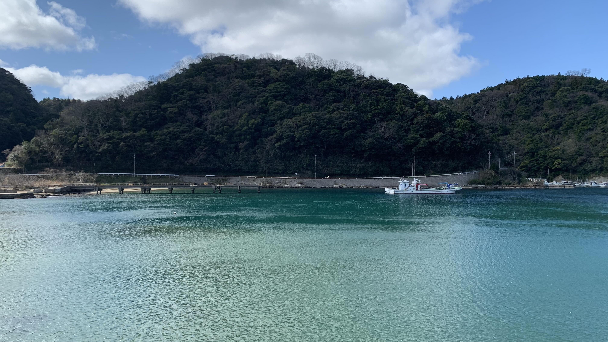
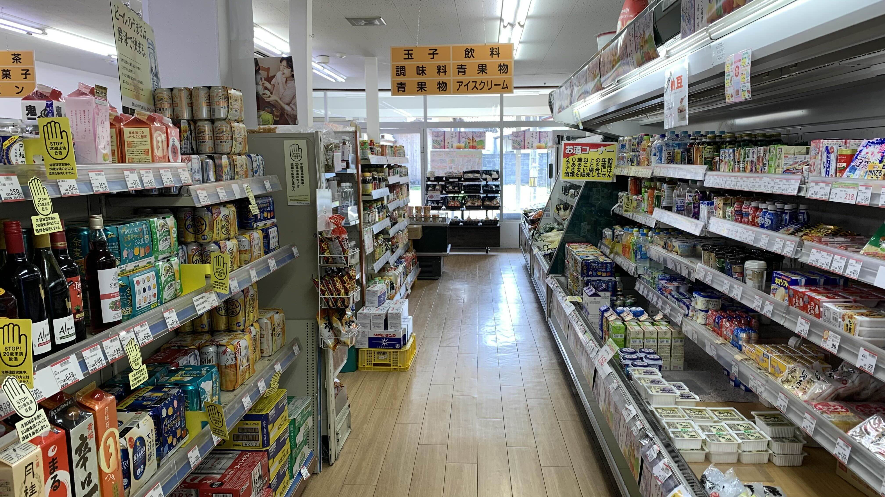
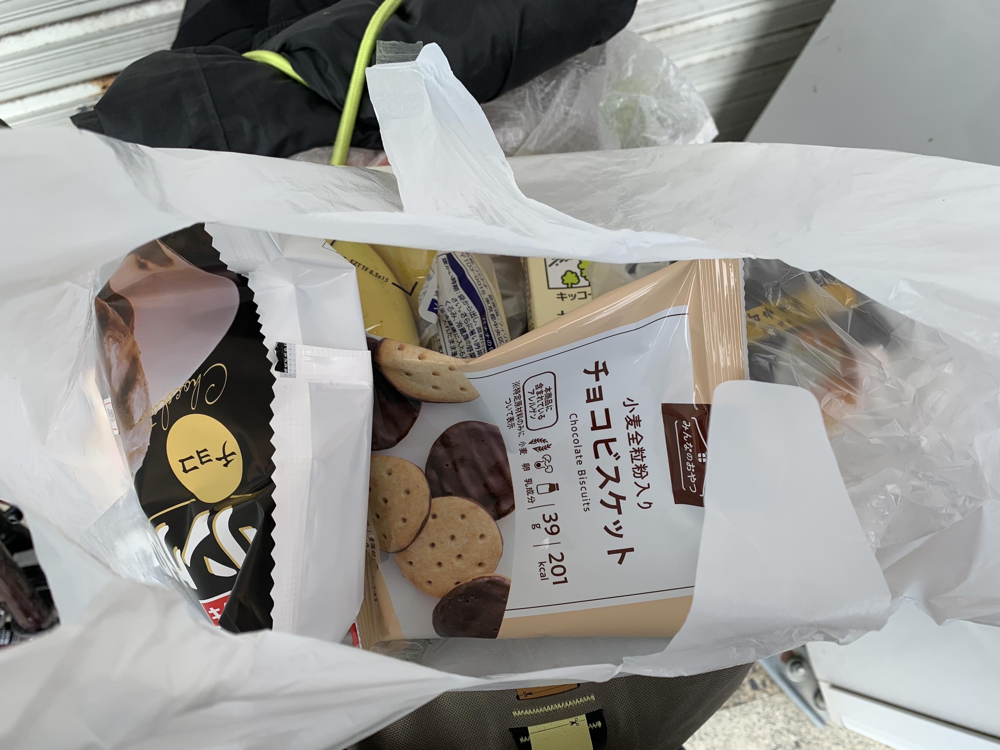

k-Day 010｜搖曳露營
旅行第十天，設定上是輕鬆日。
要離開溫泉小鎮了。

因為膝蓋的傷口還有幾個洞，因此並沒有泡溫泉。不過這裡的藍色海灣和平靜的街道相當有氣氛。

一早起來想找個早餐店，當然沒有這樣的東西。
正在煩惱今天的早餐，昨晚的室友在出發前贈送了一條羊羹。

謝謝來自鳥取的禮物。
以前我說自己在旅行，人們往往有兩種回應，一種是屬於你從哪裡開始，要騎到哪裡？另一種是你騎了多久，總共要花多少時間。我以此作為人類之間粗淺的分類方式。
不過這次遇到幾個人，他們不問去哪裡也沒問旅行多久了。只給我食物和資訊，和我說要小心喔。這是新的發現。

尋獲地方市場，其實很像台灣的社區超市。

貨架上的商品也很齊全。

深怕餓肚子，買了各種食物。

真的再見了👋小海灣。

目前規定自己每小時休息進食一次，找到一個不錯的候車亭。

很快進入江津，是昨天原本打算住宿的地方。今天當然速速通過，在中午抵達休息站。

點了一份這邊有名的豬肉製成的高檔豬排咖哩飯。

這碗沙拉全都來自島根地區。每次都會看到的休息站賣的花和植物也是跟當地花農合作的。

出發前的身體補給。

這兩天騎起來有點軟，幫它打滿氣。

下午的路程很短，晚上準備在石見的免費露營場露營。

看到這個行人過隧道時可以按的按鈕，這樣外面的車就會知道裡面是有人或自行車的。

正想著好貼心啊！結果按鈕故障中。

天氣大好。風也沒有昨天那麼猛烈。

按照這個煙囪的廢棄看來還吹的是順風。
下午經過一個頗具規模的新式建築，窗戶裡面的人在打太極。進去看了一下，也許之後找不到地方住也能有這種活動中心可以遮風避雨。

這個告示牌很明顯有針對意味，不過也許日本不興撻伐年齡歧視這一套。

這棟建築很有趣，新古美術究竟是什麼意思。

這條街讓我想起法國中部的一些小鎮，不知道為什麼看起來都沒有人住的樣子。

就這樣晃悠悠地，也是在下午四點順利抵達濱田。

石見海濱公園。有傳說中的當日入住免費營地。

登記處的人很詳盡的為我解說了這邊的環境。

然後給了一個號碼牌和手冊，號碼牌要掛在帳篷上，巡邏的人會查看。

接著再往前騎個1.5公里就有超商可以採買食物。

晚餐和早餐都一起買好了。

在夕陽下搭好帳篷，開始到處參觀。

這麼冷的天，我發誓剛剛看到有人在游泳。

整個免費營地只有三組人，其他都在樹林後面的B村木屋區。

能夠光明正大的露營看夕陽，心胸都開闊了。

自從看了搖曳露營後，對於早春在日本露營就有了期待，沒想到這裡的地上還真的有許多松果。是很好的助燃物呢。

然而我沒有帶上焚火台，開著瓦斯看著火焰也是覺得滿足。

難得悠閒的一天。

今日花費： 糧食 1008、蛋白棒＋寶礦力 913、咖哩豬排飯 1500、晚餐 1988